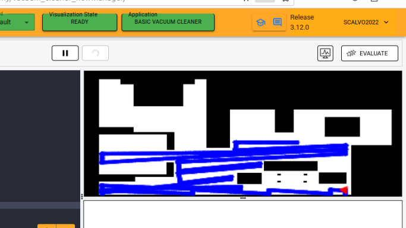

ROOMBA - lOCALICE VACUUM CLEANER
Silvia Calvo Cabello
Silvia Calvo Cabello
La siguiente práctica consiste en crear un programa para un robot aspiradora limpie la mayor zona de la casa posible mediante el algortimo de BSA.
El algoritmo de BSA consiste en .
Para lograr el objetivo se crearon varios intentos de algoritmos que pudiesen recorrer toda la casa. A continuación, explico y muestro cada uno de los intentos y sus resultados, así como los problemas que se fueron resolviendo hasta llegar al algoritmo final.
ALGORITMO Nº1 APROXIMACIÓN
Mi primer intento fue crear el mapa de rejilla en unobtics. Tuve problemas a la hora de entender el dibujar las rejillas, porque creaba una matriz con las rejillas, pero no entendia el dibujar los pixeles.A continuación intenté realizar el algorimo de BSA. Tuve problemas para entender si era continuo todo el rato, o si era siempre que se pueda ir en la direcion primaria. Después intenté programar la parte de salir de los puntos criticos hacia los puntos de retorno. Mi primea aproximación era mediante la medida Mnahatan, el problema de esta es que no tiene en cuenta los obstaculos ni las celdas ya visitadas.
ALGORITMO Nº2 ESTADO RECUPERACIÓN
Se añadió un estado que consiste en retroceder y girar ciertos grados al chocar con un obstáculo, permitiendo cubrir gran parte del mapa.
Problemas:
- Funciona con obstáculos, pero no con esquinas, ya que al girar y avanzar vuelve a chocar.
ALGORITMO Nº3 ESTADO ESCAPE
Se introdujo el estado SCAPE, que intenta salir de esquinas usando el láser para medir distancias a las paredes y encontrar huecos.Problemas:
- No llegaba a todas las salas.
VIDEO DE MUESTRA
A partir del día 26 de septiembre, la granja de ordenadores de la universidad dejó de funcionar, por lo que las pruebas se realizaron con mi ordenador, siendo su rendimiento mucho más bajo. A continuación se muestra un video (velocidad x4) donde la pantalla de gazebo y la visualización de zonas recorridas van desfasadas.Ver el video